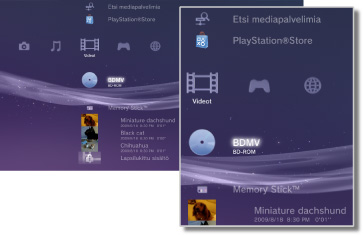

Videot > Videot-luokka
Videot-luokka
 (Videot) sisältää seuraavat kuvakkeet. Kuvakkeet vaihtelevat käyttöehtojen mukaan.
(Videot) sisältää seuraavat kuvakkeet. Kuvakkeet vaihtelevat käyttöehtojen mukaan.

 |
BD-tietotyökalu | Blu-ray Disc™ (BD) -levyjen hallintatiedot tallennetaan. |
|---|---|---|
 |
Etsi mediapalvelimia | Aloita samaan verkkoon liitettyjen DLNA-mediapalvelimien haku. |
 |
Mediapalvelin | Muodosta yhteyksiä DLNA-mediapalvelimiin ja toista niihin tallennettuja videotiedostoja. Näytössä näkyvä kuvake määräytyy palvelimen tyypin mukaan. |
 |
Videoiden muokkaus- & lähetysohjelma | Voit muokata PS3™-järjestelmän tallennustilaan tallennettua videosisältöä. |
 |
BD-ROM / BD-R / BD-RE | Toista Blu-ray Disc (BD). |
 |
DVD-ROM / DVD-R / DVD+R / DVD-RW / DVD+RW | Toista DVD- tai AVCHD-levy. |
 |
Data-levy | Toista yhteensopivalle, tallennettavalle levylle, kuten CD-R- tai DVD-R-levylle, tallennettuja videotiedostoja. |
 |
Memory Stick™ | Toista videotiedostoja, jotka on tallennettu Memory Stick™ -muistikortille.* |
 |
SD Memory Card | Toista videotiedostoja, jotka on tallennettu SD Memory Card -muistikortille.* |
 |
CompactFlash® | Toista videotiedostoja, jotka on tallennettu CompactFlash®-muistikortille.* |
 |
PSP™ (PlayStation®Portable) | Toista PSP™-järjestelmän Memory Stick™ -muistikortille tallennettuja videotiedostoja. |
 |
PSP™ (PlayStation®Portable) | Toista PSP™go-järjestelmän muistiin tallennettuja videotiedostoja. |
 |
Digitaalikamera | Toista videotiedostoja, jotka on tallennettu PS3™-järjestelmän kanssa yhteensopivaan digitaalikameraan. |
 |
WALKMAN®/ATRAC Audio Device(WALKMAN®) | Toista WALKMAN®/ATRAC Audio Device (WALKMAN®) tallennettuja videotiedostoja. |
 |
ATRAC Audio Device | Toista ATRAC Audio Device tallennettuja videotiedostoja. |
 |
USB-laite | Toista videotiedostoja, jotka on tallennettu USB-tallennuslaitteeseen. |
| Digitaalikameraelokuvat | Toista videotiedostoja, jotka on tallennettu tallennusvälineen DCIM-kansioon. | |
| (kansio) | Tämä kuvake näytetään niiden kansioiden kohdalla, jotka on luotu tallennusvälineelle tietokoneen avulla. | |
 |
(järjestelmän tallennustilaan tallennetut tiedostot) | Toista PS3™-järjestelmän tallennustilaan tallennettuja videotiedostoja. Pienoiskuvat näytetään. |
 |
(järjestelmän tallennustilaan tallennetut tiedot) | Tämä kuvake ilmaisee järjestelmän tallennustilaan tallennettuja videotiedostoja. Kun tällaisen tiedoston toisto aloitetaan, tiedot tallennetaan ja videotiedosto toistetaan. |
| * |
Joidenkin tallennusvälinetyyppien käyttämiseen tarvitaan USB-sovitin, joka ei tule PS3™-järjestelmän mukana. Jos tallennusvälinettä käytetään USB-sovittimen kanssa, tallennusvälineen kuvake on |
|---|
 (USB-laite).
(USB-laite).Vihjeitä
- Videosisällön vuokraaminen/myyminen PS3™-järjestelmän PlayStation®Store-kaupassa on lopetettu.
- Lisätietoja DLNA:sta on tämän oppaan kohdassa
 (Asetukset) >
(Asetukset) >  (Verkkoasetukset) > [Mediapalvelinyhteys].
(Verkkoasetukset) > [Mediapalvelinyhteys]. - Jos haluat toistaa tässä järjestelmässä tekijänoikeuksin suojattuja Blu-ray Disc -levyjä tarkkuudella 1080p, järjestelmä täytyy kytkeä HDCP (High-bandwidth Digital Content Protection) -standardin kanssa yhteensopivaan laitteeseen HDMI-kaapelilla.
- Joidenkin tekijänoikeussuojattujen videotiedostojen pikkukuvat eivät ehkä näy.
- Kun toistat BD-levyä, jonka sisällössä käytetään lapsilukkotoimintoa, PS3™-järjestelmän lapsilukkotoiminnon taso rajoittaa sisällön toistamista. BD-levyn lapsilukkotoiminnon tasoa voi muuttaa kohdassa (Asetukset) >
 (Turva-asetukset).
(Turva-asetukset). - Kun toistat DVD-levyä, jonka sisällössä käytetään lapsilukkotoimintoa, sisällön toistamiseen tarvitaan ehkä salasana. Salasanan voi määrittää kohdassa (Asetukset) > (Turva-asetukset).
- Lapsilukittu sisältö on merkitty
 (Asetukset) > (Turva-asetukset).
(Asetukset) > (Turva-asetukset). - Lukittujen BD-levyjen kohdalla on
 -kuvake. Voit toistaa lukittujen levyjen sisältöä antamalla levyn valmistajan määrittämän salasanan.
-kuvake. Voit toistaa lukittujen levyjen sisältöä antamalla levyn valmistajan määrittämän salasanan. - Joissain harvinaisissa tapauksissa PS3™-järjestelmä ei toista levyjä tai muita tallennusvälineitä oikein. Tämä johtuu yleensä valmistusmenetelmien eroista tai ohjelmiston koodauksesta.
- Jos järjestelmään on kytketty HDMI-kaapelilla laite, joka ei tue HDCP (High-bandwidth Digital Content Protection) -standardia, järjestelmä ei tuota kuvaa ja/tai ääntä.
3D-sisällön katselu
3D-sisällön katsomiseen vaaditaan 3D-standardin mukainen 3D-yhteensopiva televisio ja nopea HDMI-kaapeli.
Vihjeitä
- Joitakin Blu-ray 3D™ -sisältöjä toistettaessa jotkin näkyvät osat, kuten valikot tai tekstitys, voivat näkyä eri tavalla 3D-tilassa PS3™-järjestelmässä kuin muissa toistolaitteissa.
- Joidenkin sisältöjen kanssa osa BD-J-toiminnoista ei välttämättä toistu 3D-tilassa tai ei toimi oikein PS3™-järjestelmässä.
- Dolby TrueHD -ääntä ei tueta Blu-ray 3D™ -sisällön toiston aikana. Sen sijaan käytetään Dolby Digital -muotoa.
Blu-ray Disc (BD) -levyn paikallinen muistitila
Jos BD-levyn toiston aikana tulee näkyviin riittämätöntä paikallista muistitilaa koskeva virheilmoitus, vapauta tallennustilaa poistamalla tarpeettomia tiedostoja järjestelmän tallennustilasta.
Paikallinen muistitila on BD-ROM Profile 1.1 / 2.0 -standardeissa määritetty tietojen tallennusalue. Nämä tiedot tallennetaan PS3™-järjestelmän tallennustilaan.